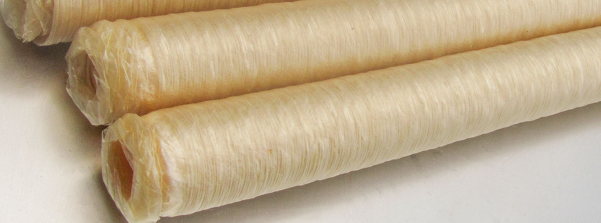

Tripa
Colágeno
OCaG+
Comestible, utilizado para la producción de salchichas cocidas y ahumados, semi-ahumadas con “mordedura” natural (no emite ningún sonido cuando se muerde la salchicha).

Características Generales
Tiene muy alta resistencia y es estable en el horno, comestible, para salchichas curadas, cocidas, ahumadas, semi-ahumadas (frankfurters, perritos calientes, bratwurst, etc.) teniendo suave mordida como la que tiene la tripa natural.

Se produce en tubos corrugados , calibre 13-32 mm., con longitud de tubo 18,5 - 21,5 cm o 26 - 29 cm.
La tripa se suministra en embalaje hermético el que previene el secado. Tripa se suministra con extremo cerrado y abierto.
Calibre en bobina: Ø 21, Ø 24, Ø 26, Ø 28, Ø 30, Ø 32mm.
Calibre corrugada: Ø 13, Ø 15, Ø 16, Ø 17, Ø 18, Ø 19, Ø 20, Ø 21, Ø 22, Ø 23, Ø 24, Ø 25, Ø 26, Ø 28, Ø 30, Ø 32mm.
Calibre en bobina: Ø 21, Ø 24, Ø 26, Ø 28, Ø 30, Ø 32mm.
Calibre corrugada: Ø 13, Ø 15, Ø 16, Ø 17, Ø 18, Ø 19, Ø 20, Ø 21, Ø 22, Ø 23, Ø 24, Ø 25, Ø 26, Ø 28, Ø 30, Ø 32mm.
La Elasticidad, resistencia y pureza bacteriana son mucho más altas en comparación con la tripa natural. Estabilidad del diámetro del producto.
La penetrabilidad del vapor y del gas de la tripa facilita la penetración de la sustancia aromática en el producto durante la curación al humo y también permite mantener el aroma durante todo el tiempo de conservación.
No hace falta remojarla tripa antes del uso.
La tripa comestible en su producto acabado tiene suave mordida como la que tiene la tripa natural.